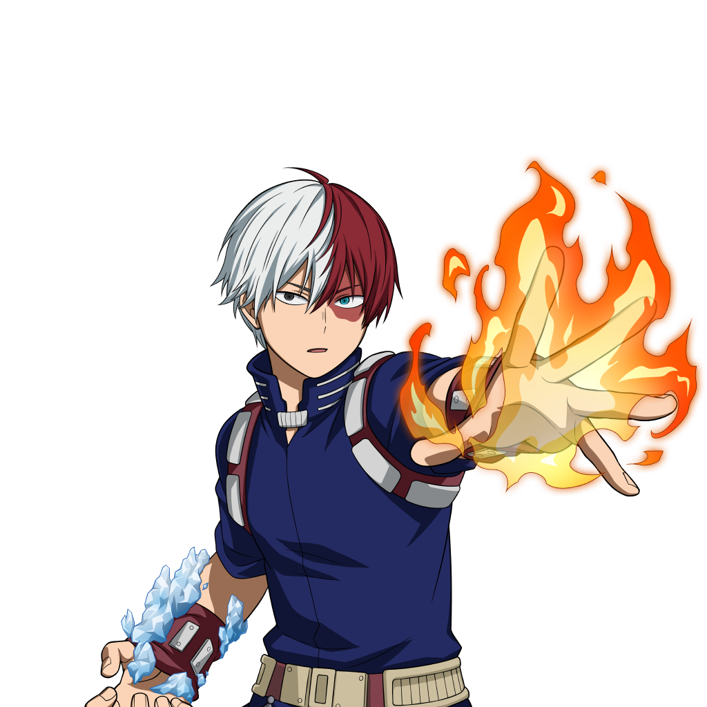

Su informacion principal
Nombre: Shoto Todoroki
Quirk: Mitad hielo, Mitad Fuego

El Quirk de Shoto le da la habilidad de congelar con la mitad derecha de su cuerpo y quemar con la mitad izquierda.
Wiki con informacion mas detallada de Shoto Todoroki